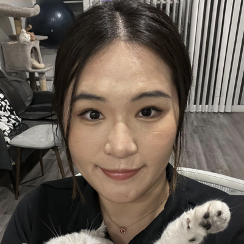
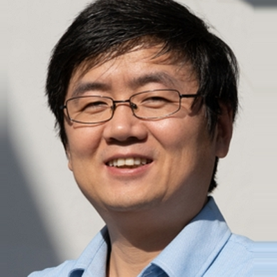

About the Workshop
Recent years have witnessed rapid progress in generative AI models for text, images, video, audio, and 3D content, fundamentally reshaping how digital content is created. Beyond automated generation, a new paradigm is emerging: human-AI co-creation, where AI systems act not as passive tools, but as active creative partners that collaborate with humans throughout the artistic and design process.
In the context of generative art, this shift raises new research questions at the intersection of computer graphics, machine learning, and human-computer interaction. Rather than optimizing for realism or accuracy alone, generative art systems must support expressiveness, controllability, interactivity, and authorship, enabling artists and designers to iteratively explore ideas, guide generation, and retain creative agency.
Advances in graphics and AI have enabled a wide spectrum of creative workflows, including interactive image and 3D generation, procedural and data-driven art, multimodal creation from text, sketches, or motion, and physically grounded synthesis for fabrication. These developments are increasingly impacting digital art, visual design, animation, virtual and augmented reality, and computational fabrication.
To fully realize the potential of human-AI co-creation in generative art, expertise from multiple research areas must converge, including graphics algorithms, generative modeling, interactive systems, perception, and fabrication-aware simulation. Ethical and societal considerations, such as authorship, originality, bias, and the role of human creativity, are also central to this discussion.
By bringing together researchers, artists, and system builders, this workshop aims to identify open challenges, share emerging methods and systems, and foster new directions for human-AI co-creation in generative art, grounded in graphics research and real-world creative practice.
Key Topics

Creative Tools
Interactive systems and interfaces that enable artists and designers to collaborate with generative models in real time, including sketch-, text-, gesture-, and multimodal-driven workflows, as well as tools for exploration, refinement, and creative control.
Generative Art
Graphics and AI techniques for synthesizing visual, 3D, and multimodal artistic content, including procedural generation, diffusion and foundation models, neural representations, and physics-aware or semantics-aware generation for artistic expression.
Design, Fabrication, and Computational Craft
Generative methods that tightly couple virtual design with real-world fabrication, integrating material property, manufacturing constraints, and physical processes into the creative loop.
Schedule
Tentative half-day workshop schedule (times in local conference time):
Opening Remarks
Organizing team
Keynote 1
Masha Shurgina (NVIDIA)
Keynote 2
Maneesh Agrawala (Stanford University)
Keynote 3
Yael Vinker (MIT CSAIL)
Break
Keynote 4
Jennifer Jacobs (UC Santa Barbara)
Keynote 5
Adriana Schulz (Brown University)
Keynote 6
Zeyu Wang (HKUST Guangzhou)
All times are approximate and may be adjusted based on final speaker availability and SIGGRAPH scheduling constraints.
Invited Speakers

Masha Shurgina
NVIDIA Spatial Intelligence Lab
Leads the Creative and Applied AI Tools (CAAT) group, focusing on AI for creative and interactive tools and 3D deep learning research.

Adriana Schulz
Brown University
Associate Professor of Computer Science and chair of WiGRAPH. Her research focuses on computational design methods that transform how physical artifacts are designed and manufactured.

Jennifer Jacobs
UC Santa Barbara
Assistant Professor directing the Expressive Computation Lab, developing platforms and tools that enable domain professionals to adapt computational workflows to meaningful design practices.

Zeyu Wang
HKUST (Guangzhou)
Assistant Professor leading the Creative Intelligence and Synergy (CIS) Lab. His research focuses on computer graphics, HCI, AI, and digital cultural heritage.

Maneesh Agrawala
Stanford University
Forest Baskett Professor of Computer Science and Director of the Brown Institute for Media Innovation. Works on computer graphics, HCI, and visualization guided by cognitive design principles.

Yael Vinker
MIT CSAIL
Postdoctoral researcher spanning computer graphics, computer vision, and machine learning, with a focus on computational systems that support visual thinking and creative expression.
Organizers

Ying Jiang
Postdoc @ UCLA
Postdoctoral researcher at UCLA AIVC Lab. Her research focuses on Human-AI content creation in visual computing, spanning 2D sketching, 3D modeling, and 4D physics-based dynamics, combining physics- and geometry-based principles with generative models.
 Lu.png)
Jiayin Lu
Postdoc @ UCLA
Hedrick Assistant Adjunct Professor at UCLA. Her research bridges computational geometry, high-performance computing, and machine learning to advance mesh generation, with a passion for generative art and mathematical visualization.

Yin Yang
Associate Professor @ University of Utah
Associate Professor at the Kahlert School of Computing, co-directing Utah Graphics Lab. His research develops efficient computing methods for graphics, simulation, deep learning, and robotics. NSF CAREER award recipient.

Hongbo Fu
Professor & Acting Head @ HKUST
Professor and Acting Head of the Division of Arts and Machine Creativity at HKUST. His research spans computer graphics, HCI, and computer vision, with 200+ publications in top venues including SIGGRAPH and CHI.

Chenfanfu Jiang
Professor @ UCLA
Professor of Mathematics at UCLA and director of the AIVC Lab. Known for physics simulators MLS-MPM and IPC, his research spans 3D visual computing, physical AI, and 3D generative AI. NSF CAREER award recipient.
Join Us at SIGGRAPH 2026
This workshop is for anyone interested in human-AI co-creation in generative art. Whether you're analyzing creative processes, designing interactions, or training models, we welcome all curious minds.
Researchers
In graphics, AI, and computer vision
Artists & Designers
Exploring AI-human collaboration
Cognitive Scientists
Studying visual cognition
Practitioners
Building generative models
If a line can say a lot, imagine what we can say together.
Acknowledgement
We thank Yumeng He and Xiaoying Wang for their help in preparing the website.